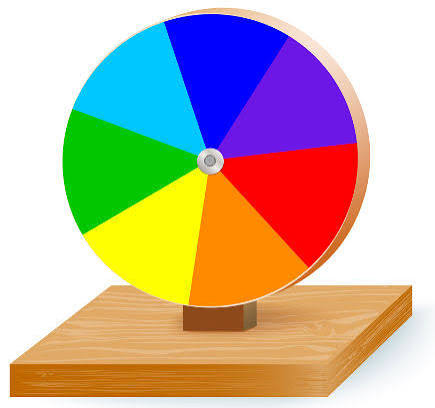

O disco de newton e um dispositivo inventado pelo fisico isaac Newton para demonstrar de forma pratica a decomposicao e recomposicao da luz. Ele prova que a luz branca do sol e, na verdade a mistura de todas as cores do arco-iris. COMO FUNCIONA CORES BASICAS: o disco e dividido em setores circulados pintados com as cores do espectro visivel (vermelho, laranja, amarelo, verde, azul, anil e violeta) ROTACAO RAPIDA: Quando o disco gira em alta velocidade, as cores se misturam diante dos nossos olhos. RESULTADO VISUAL: O disco passa a parecer branco (ou cinza-esbranquicado, dependendo da fidelidade das cores e da iluminacao do ambiente). FENOMENO BIOLOGICO: Isso acontece devido a persistencia retiniana, uma ilusao de otica onde o olho humano retem a imagem de cada cor por uma fracao de segundo, sobrepondo-as no cerebro.